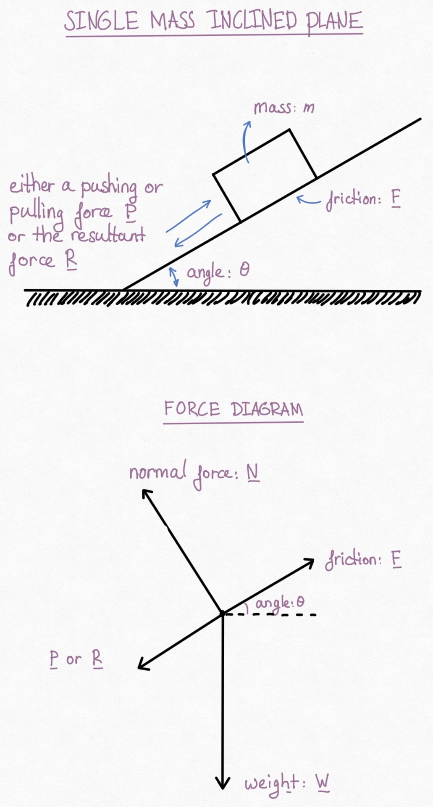

This is a simple tool to calculate forces, accelerations, angles or masses with a given set of initial conditions for a single body on an inclined plane. Bonus: it will not just give you the result of the calculation, it will show you the details of workings.
A rough sketch of the situation is given below, including a sketch of the force diagram.

What is it that you would like to calculate?
This is just a side project for the author to teach himself some JavaScript programming. Do have a look at our main website for some more maths and physics.
(C) 2020 KJ Runia